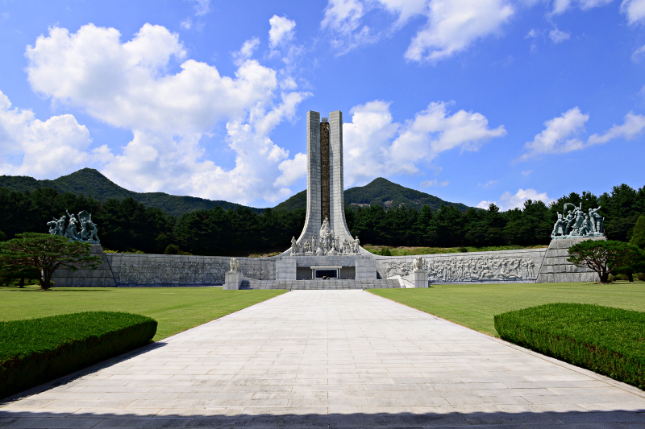
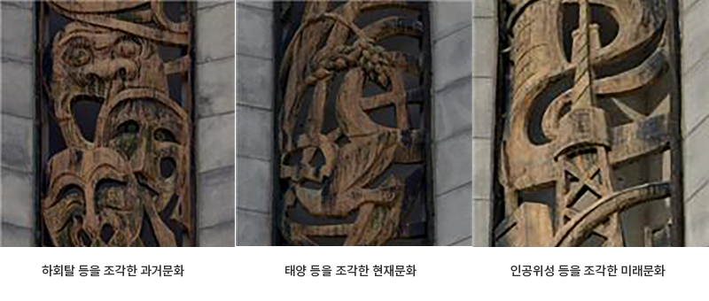
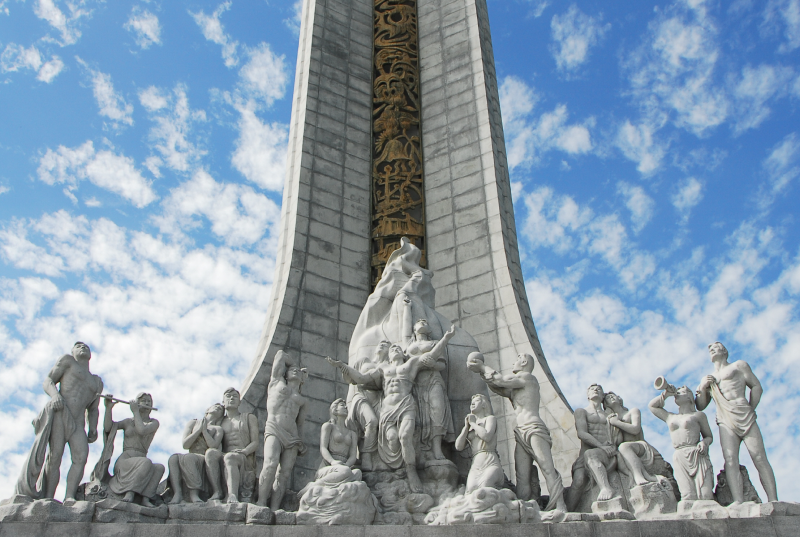
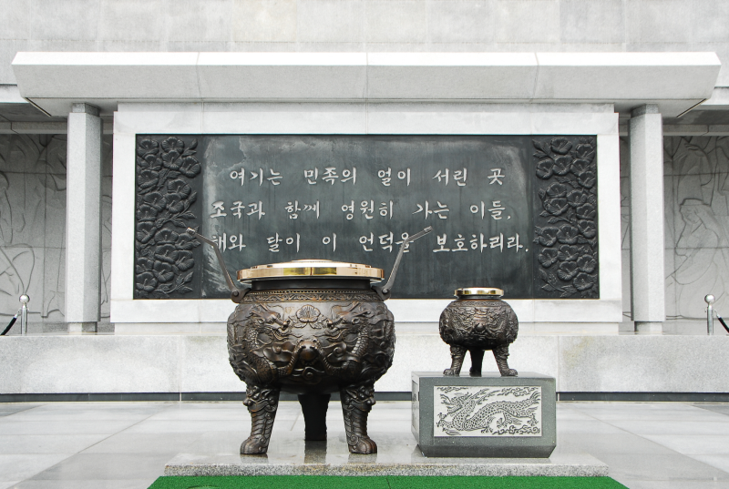
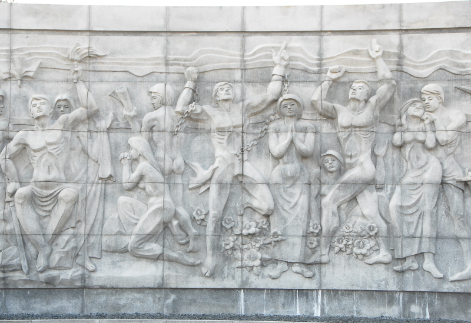
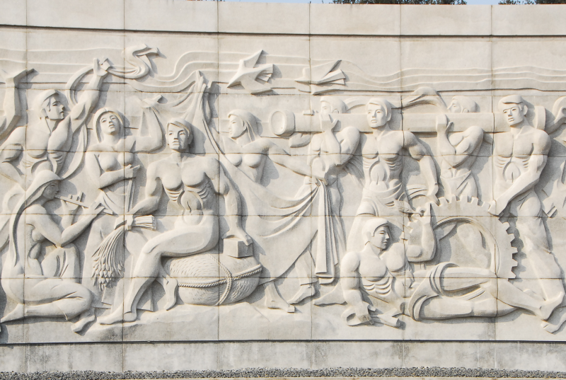
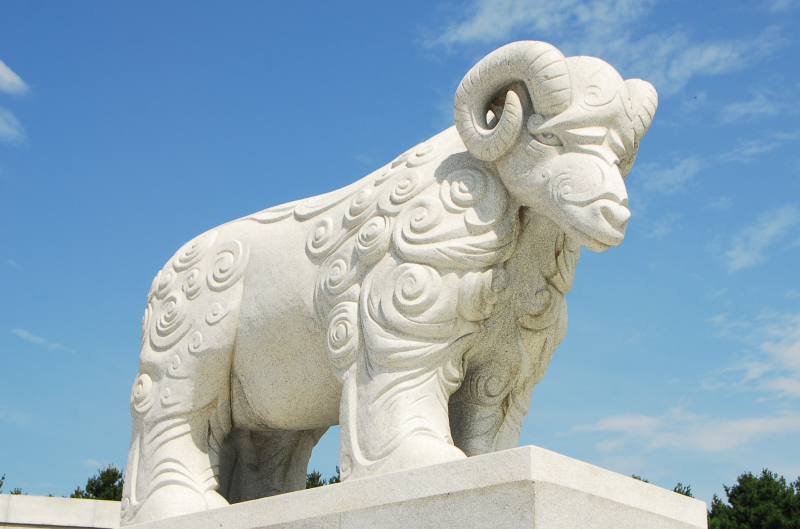

참배/추모 시설

-
현충탑
- 국가를 위해 희생하신 순국선열과 호국 영령의 충의와 위훈을기리는 탑으로, 국립 대전현충원을 상징한다. 탑 높이는 43m, 넓이는 110m이며, 탑 내부 에는 시신을 찾지 못한 순국선열과 호국 영령의 이름 등을 석판에 기록한 위패봉안실과 신원을 확인 할 수 없는 무명용사의 유해를 안치한 봉안당이 있다.

-
탑신과 청동투조
- 예로부터 충신과 효자를 지켜준다는 의미를 담고 있는 상으로 현충문 좌·우에서 순국선열과 호국영령을 지키고 있다

-
승리의 영광상
- 국가를 위해 희생하신 순국선열과 호국 영령의 충의와 위훈을기리는 탑으로, 국립 대전현충원을 상징한다. 탑 높이는 43m, 넓이는 110m이며, 탑 내부 에는 시신을 찾지 못한 순국선열과 호국 영령의 이름 등을 석판에 기록한 위패봉안실과 신원을 확인 할 수 없는 무명용사의 유해를 안치한 봉안당이 있다.

-
향로와 헌시비
- 현충탑 앞쪽에는 향로와 제단이 차례로 놓여 있고, 제단 뒤쪽에는 헌시가 새겨져 있다. 향로의 둘레는 250cm이며, 용문양이 새겨져있어 상서로운 느낌을 준다. 또한, 헌시는 순국선열과 호국영령께 바치는 글로 노산 이은상 선생이 지었다.

-
현충탑 좌측 벽면 부조
- 우리나라의 암울했던 역사와, 자유와 평화에 대한 염원을 담고있으며, 끈으로 묶여진 돌, 팔이 쇠사슬에 묶여 있는 모습, 부러져 있는 총 등을 새겼다.

-
현충탑 우측 벽면 부조
- 역사적 아픔을 극복하고, 발전하는 조국의 모습과 풍요로운 국민상을 표현하여 약진과 번영을 이루자는 뜻을 담고 있다. 톱니바퀴, 곡식과 가마니 등을 새겼다.
-
애족상 (좌측 끝)
- 부상당한 민간인을 군인이 부축하고 한 여인이 보검을 높이 들어 민족의 단합된 모습을 표현하였다.
-
애국족상(우측 끝)
- 온 국민이 합심하여 조국을 위하여 신명을 바치겠다는 애국의 의지를 나타냈다.
-
호국상 (뒤편 끝)
- 육·해·공군, 해병, 경찰, 학도병 등이 일심 단결하여 조국을 수호하는 모습을 표현하였다.

-
공양상
- 현충탑 앞쪽의 좌·우측에 세워져 있으며 양의 모습으로 순국 선열과 호국영령들께 바치는 제물을 나타냈다.